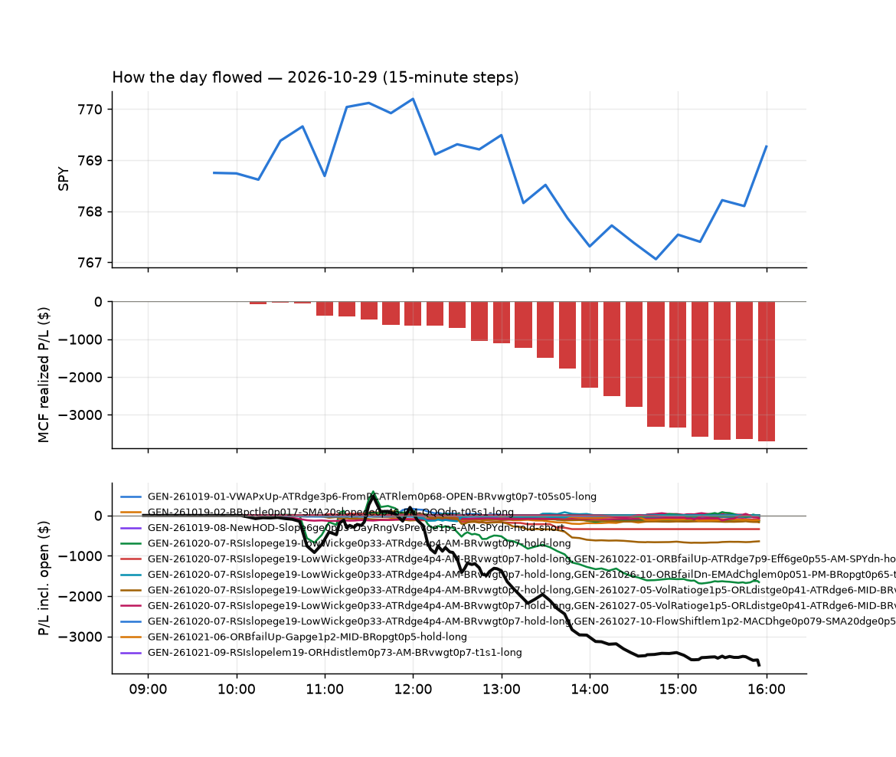
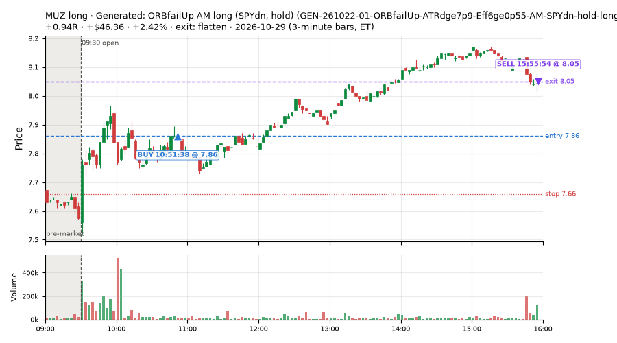
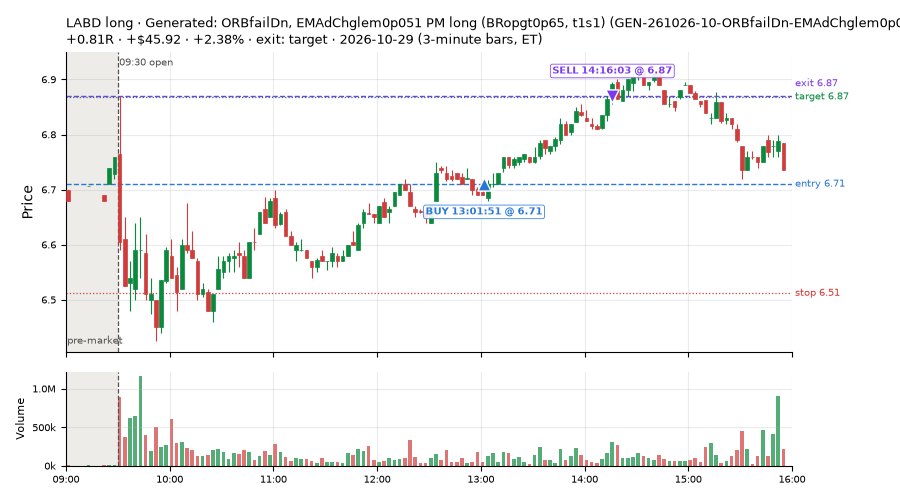
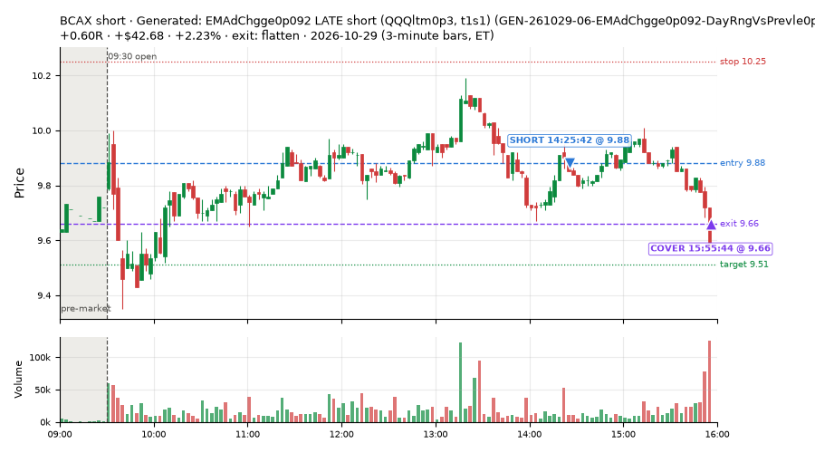
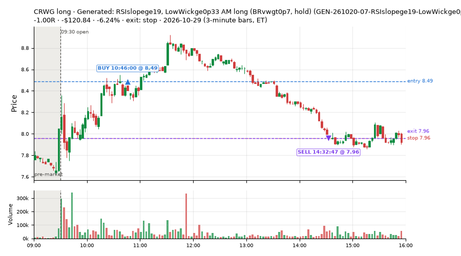
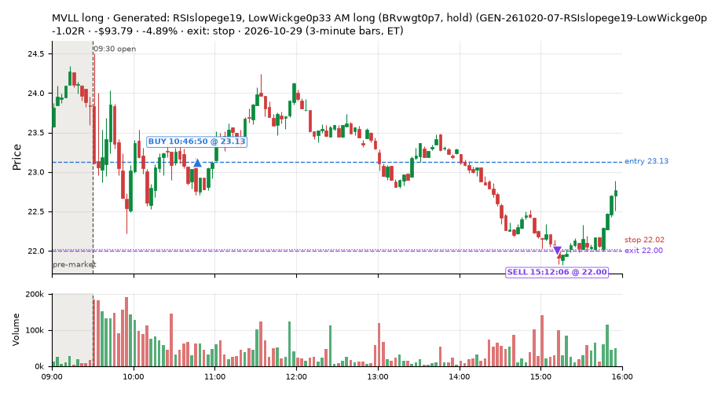
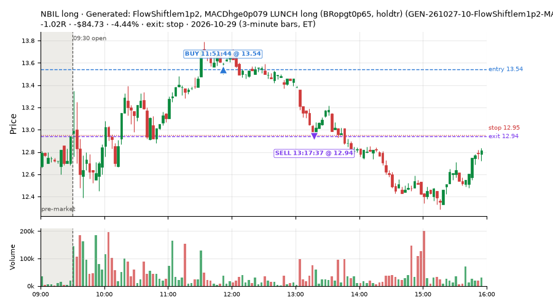
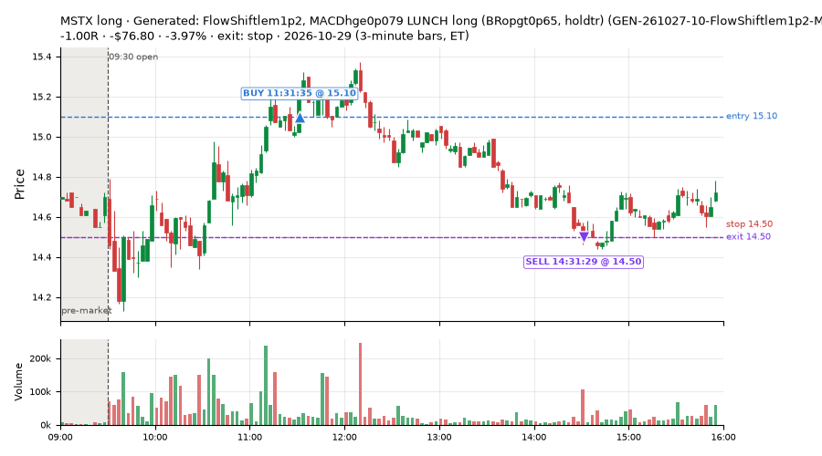
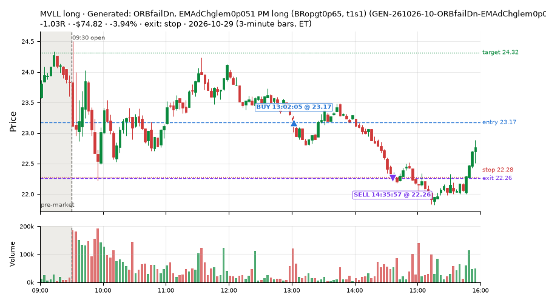

217 trades · win rate 21% · P/L $-3,709.59
PROBATION: no live setup has passed both locked test periods. 10 owner-directed setups added 2026-10-08 (MarcoFlow top 5 + 5 new), untested live. RW6G1 (RW6 + VWAP band guard) added 2026-10-09, probation.

| Symbol | Setup | Side | In | Out | Entry | Exit | Exit reason | % gained | P/L |
|---|---|---|---|---|---|---|---|---|---|
| MUZ | Generated: ORBfailUp AM long (SPYdn, hold) (GEN-261022-01-ORBfailUp-ATRdge7p9-Eff6ge0p55-AM-SPYdn-hold-long) | long | 10:51 | 15:55 | 7.86 | 8.05 | flatten | +2.42% | $46.36 |
| LABD | Generated: ORBfailDn, EMAdChglem0p051 PM long (BRopgt0p65, t1s1) (GEN-261026-10-ORBfailDn-EMAdChglem0p051-PM-BRopgt0p65-t1s1-long) | long | 13:01 | 14:16 | 6.71 | 6.87 | target | +2.38% | $45.92 |
| BCAX | Generated: EMAdChgge0p092 LATE short (QQQltm0p3, t1s1) (GEN-261029-06-EMAdChgge0p092-DayRngVsPrevle0p61-LATE-QQQltm0p3-t1s1-short) | short | 14:25 | 15:55 | 9.88 | 9.66 | flatten | +2.23% | $42.68 |
| Symbol | Setup | Side | In | Out | Entry | Exit | Exit reason | % lost | P/L |
|---|---|---|---|---|---|---|---|---|---|
| CRWG | GEN-261020-07-RSIslopege19-LowWickge0p33-ATRdge4p4-AM-BRvwgt0p7-hold-long | long | 10:46 | 14:32 | 8.49 | 7.96 | stop | -6.24% | $-120.84 |
| MVLL | GEN-261020-07-RSIslopege19-LowWickge0p33-ATRdge4p4-AM-BRvwgt0p7-hold-long | long | 10:46 | 15:12 | 23.13 | 22.00 | stop | -4.89% | $-93.79 |
| NBIL | GEN-261027-10-FlowShiftlem1p2-MACDhge0p079-SMA20dge0p59-LUNCH-BRopgt0p65-holdtr-long | long | 11:51 | 13:17 | 13.54 | 12.94 | stop | -4.44% | $-84.73 |
| MSTX | GEN-261027-10-FlowShiftlem1p2-MACDhge0p079-SMA20dge0p59-LUNCH-BRopgt0p65-holdtr-long | long | 11:31 | 14:31 | 15.10 | 14.50 | stop | -3.97% | $-76.80 |
| MVLL | GEN-261026-10-ORBfailDn-EMAdChglem0p051-PM-BRopgt0p65-t1s1-long | long | 13:02 | 14:35 | 23.17 | 22.26 | stop | -3.94% | $-74.82 |








Signal to fill: median 1s, 90th percentile 3s (217 trades). Bars close each minute; the order follows the bar close.
Best excursion (MFE): median 0.31R; worst (MAE) median 1.01R. 44% of trades never got +0.25R in our favour; 12 reached +1R and still closed at or below 0.
| Symbol | Setup | Best R | Worst R | Closed R |
|---|---|---|---|---|
| ETHU | GEN-261020-07-RSIslopege19-LowWickge0p33-ATRdge4p4-AM-BRvwgt0p7-hold-long | +1.88 | -1.02 | -0.99 |
| SOXL | GEN-261020-07-RSIslopege19-LowWickge0p33-ATRdge4p4-AM-BRvwgt0p7-hold-long | +1.64 | -1.01 | -1.00 |
| BB | GEN-261020-07-RSIslopege19-LowWickge0p33-ATRdge4p4-AM-BRvwgt0p7-hold-long | +1.43 | -1.07 | -1.01 |
| ESTC | GEN-261022-07-Z12lem1p9-FlowShiftlem0p96-ATRdge3p6-AM-BRopgt0p5-t1s1-short | +1.25 | -1.09 | -1.09 |
| IREN | GEN-261020-07-RSIslopege19-LowWickge0p33-ATRdge4p4-AM-BRvwgt0p7-hold-long | +1.30 | -1.02 | -1.00 |
| Entry time | Trades | Win | Avg R | P/L |
|---|---|---|---|---|
| 09:50-10:30 | 23 | 17% | -0.60 | $-139.37 |
| 10:30-11:30 | 95 | 17% | -0.71 | $-2,091.55 |
| 11:30-13:00 | 46 | 22% | -0.62 | $-1,073.43 |
| 13:00-14:00 | 13 | 31% | -0.55 | $-228.16 |
| 14:00-16:00 | 40 | 30% | -0.25 | $-177.08 |
| Setup | Trades | Win | Avg R | Adj R (net of SPY) | P/L |
|---|---|---|---|---|---|
| Generated: VWAPxUp OPEN long (BRvwgt0p7, t05s05) (GEN-261019-01-VWAPxUp-ATRdge3p6-FromPCATRlem0p68-OPEN-BRvwgt0p7-t05s05-long) | 10.0 | 30% | -0.32 | -0.26 | $-22.12 |
| Generated: BBpctle0p017 PM long (QQQdn, t05s1) (GEN-261019-02-BBpctle0p017-SMA20slopege0p46-PM-QQQdn-t05s1-long) | 1.0 | 0% | -1.22 | -1.08 | $-38.40 |
| Generated: NewHOD AM short (SPYdn, hold) (GEN-261019-08-NewHOD-Slope6ge0p03-DayRngVsPrevge1p5-AM-SPYdn-hold-short) | 2.0 | 50% | -0.23 | -0.25 | $-8.29 |
| Generated: RSIslopege19, LowWickge0p33 AM long (BRvwgt0p7, hold) (GEN-261020-07-RSIslopege19-LowWickge0p33-ATRdge4p4-AM-BRvwgt0p7-hold-long) | 46.0 | 4% | -0.93 | -0.87 | $-1,654.04 |
| Generated: ORBfailUp MID long (BRopgt0p5, hold) (GEN-261021-06-ORBfailUp-Gapge1p2-MID-BRopgt0p5-hold-long) | 29.0 | 38% | -0.27 | -0.21 | $-128.07 |
| Generated: RSIslopelem19 AM long (BRvwgt0p7, t1s1) (GEN-261021-09-RSIslopelem19-ORHdistlem0p73-AM-BRvwgt0p7-t1s1-long) | 2.0 | 0% | -1.14 | -1.13 | $-24.61 |
| Generated: ORBfailUp AM long (SPYdn, hold) (GEN-261022-01-ORBfailUp-ATRdge7p9-Eff6ge0p55-AM-SPYdn-hold-long) | 8.0 | 38% | -0.29 | -0.32 | $-140.96 |
| Generated: NewHOD, Ret15mATRge0p12 LATE short (QQQdn, t05s1) (GEN-261022-03-NewHOD-Ret15mATRge0p12-SMA20dge0p59-LATE-QQQdn-t05s1-short) | 2.0 | 0% | -1.08 | -0.97 | $-27.95 |
| Generated: Z12lem1p9, FlowShiftlem0p96 AM short (BRopgt0p5, t1s1) (GEN-261022-07-Z12lem1p9-FlowShiftlem0p96-ATRdge3p6-AM-BRopgt0p5-t1s1-short) | 14.0 | 21% | -0.63 | -0.56 | $-170.68 |
| Generated: EMAdChgge0p15 PM short (BRoplt0p5, holdtr) (GEN-261022-10-EMAdChgge0p15-ORLdistge0p41-PDLdistle0p14-PM-BRoplt0p5-holdtr-short) | 5.0 | 0% | -0.51 | -0.33 | $-70.25 |
| Generated: Ret15mATRlem0p068, EMAdChgge0p028 PM long (BRopgt0p65, hold) (GEN-261023-02-Ret15mATRlem0p068-EMAdChgge0p028-ATRdge6-PM-BRopgt0p65-hold-long) | 1.0 | 0% | -1.02 | -0.89 | $-34.51 |
| Generated: RSI5le13 OPEN short (BRvwgt0p6, holdtr) (GEN-261023-03-RSI5le13-VWAPatrlem0p34-OPEN-BRvwgt0p6-holdtr-short) | 5.0 | 20% | -0.41 | -0.52 | $-23.54 |
| Generated: EMAdChglem0p028 PM long (QQQltm0p6, t1s1) (GEN-261023-04-EMAdChglem0p028-PDHdistle0p074-EMAdifflem0p46-PM-QQQltm0p6-t1s1-long) | 7.0 | 57% | -0.01 | -0.23 | $2.54 |
| Generated: RSIslopege9p1, BarRngATRge0p087 LUNCH long (BRvwgt0p7, hold) (GEN-261023-07-RSIslopege9p1-BarRngATRge0p087-VWAPcrossesge8-LUNCH-BRvwgt0p7-hold-long) | 1.0 | 0% | -1.10 | -0.34 | $-4.68 |
| Generated: MACDhge0p12 LUNCH long (BRvwlt0p4, hold) (GEN-261023-10-MACDhge0p12-VWAPcrossesle0-EMAdiffge0p16-LUNCH-BRvwlt0p4-hold-long) | 1.0 | 0% | -0.22 | -0.34 | $-10.90 |
| Generated: NewLOD, Flow3lem0p37 LUNCH short (BRopgt0p5, holdtr) (GEN-261026-03-NewLOD-Flow3lem0p37-FromOpenATRlem0p78-LUNCH-BRopgt0p5-holdtr-short) | 1.0 | 0% | -1.08 | -1.28 | $-10.88 |
| Generated: Ret15mATRge0p042 OPEN short (BRopgt0p5, hold) (GEN-261026-05-Ret15mATRge0p042-FromPCATRge0p28-ORHdistlem0p38-OPEN-BRopgt0p5-hold-short) | 12.0 | 0% | -1.03 | -1.24 | $-109.18 |
| Generated: RSIslopege19, Ret5mge0p063 OPEN short (SPYup, holdtr) (GEN-261026-08-RSIslopege19-Ret5mge0p063-DayRngVsPrevge1p2-OPEN-SPYup-holdtr-short) | 2.0 | 0% | -1.14 | -1.21 | $-27.00 |
| Generated: ORBfailDn, EMAdChglem0p051 PM long (BRopgt0p65, t1s1) (GEN-261026-10-ORBfailDn-EMAdChglem0p051-PM-BRopgt0p65-t1s1-long) | 9.0 | 44% | -0.30 | -0.23 | $-111.93 |
| Generated: NewLOD PM long (SPYup, holdtr) (GEN-261027-02-NewLOD-RSI14le35-Gapge2-PM-SPYup-holdtr-long) | 1.0 | 0% | -1.10 | -0.87 | $-21.00 |
| Generated: VWAPatrge0, Gaplem2, FromOpenlem2 PM short (SPYdn, t1s1) (GEN-261027-04-VWAPatrge0-Gaplem2-FromOpenlem2-PM-SPYdn-t1s1-short) | 1.0 | 0% | -1.01 | -0.98 | $-22.32 |
| Generated: VolRatioge1p5 MID long (BRvwgt0p7, t05s1) (GEN-261027-05-VolRatioge1p5-ORLdistge0p41-ATRdge6-MID-BRvwgt0p7-t05s1-long) | 14.0 | 29% | -0.64 | -0.56 | $-338.99 |
| Generated: FlowShiftlem1p2, MACDhge0p079 LUNCH long (BRopgt0p65, holdtr) (GEN-261027-10-FlowShiftlem1p2-MACDhge0p079-SMA20dge0p59-LUNCH-BRopgt0p65-holdtr-long) | 18.0 | 11% | -0.79 | -0.72 | $-641.31 |
| Generated: EMAdChgge0p092 LATE short (QQQltm0p3, t1s1) (GEN-261029-06-EMAdChgge0p092-DayRngVsPrevle0p61-LATE-QQQltm0p3-t1s1-short) | 25.0 | 32% | -0.20 | -0.10 | $-70.52 |
Market direction (SPY, beta 1) accounted for $-391.66 of today's $-3,709.59; the rest ($-3,317.94) came from the setups themselves. Avg R net of SPY: -0.54 (incl. a hedge leg's cost; report only).
93 setups live today. Today: 324 signals, 225 taken, 4 lost because another setup held the symbol (1%). Since 2026-10-19 (9 sessions): 694 signals, 500 taken, 5 lost to other setups (1%). Peak open positions today 103 of 200 slots. Earnings blackout removed 1490 symbols before scanning.
Simulated playing time (not live): 194 what-if trades of signals not taken, avg -0.19R, 42% winners; of them 5 lost to another setup (avg +0.26R).
Silent: GEN-261021-10-MACDhge0p079-VWAPbarslem7-OPEN-QQQup-t1s05-long, GEN-POD1022-02-breadth-thrust-index-etf-holdtr-long, GEN-261021-08-RSI2le0-Ret15mATRge0p16-ATRdge3p6-LUNCH-QQQgt0p6-holdtr-long, GEN-261023-06-RSI7le38-Ret15mge0p54-EMAdiffge0p29-LAM-SPYltm0p25-t1s05-short, GEN-261021-01-BearDiv-RVolDayle0p47-BarsSinceHODle0-LAM-SPYltm0p25-t1s1-short, GEN-261023-05-NewLOD-SMA20dlem0p94-ORLdistlem0p24-PM-BRopgt0p65-hold-long, GEN-261021-03-RSI5le34-Ret15mATRge0p12-DayRngVsPrevge1p2-LUNCH-SPYltm0p25-t05s1-short, GEN-261021-05-RSIslopelem14-ORHdistge0p42-LAM-BRvwlt0p3-t1s05-long, GEN-261023-01-VWAPxUp-VWAPatrge0p33-LAM-SPYgt0p5-t05s05-short, GEN-261019-09-EMAdChgge0p15-Since950ATRge0p6-PM-SPYltm0p5-t05s1-short, GEN-261022-06-NewLOD-ORBfailUp-BuyPresslem0p49-PM-SPYltm0p5-t1s1-long, GEN-261023-08-RSIslopelem5p5-VWAPcrossesge8-SMA50dlem1p7-LATE-SPYltm0p5-t1s1-long, GEN-261021-04-NewHOD-PDHdistlem0p65-LAM-QQQltm0p6-hold-short, GEN-261020-02-RSIslopelem19-BarRngATRge0p14-BuyPressge0p17-LATE-BRvwgt0p7-t05s1-short, GEN-261026-09-BBpctle0p3-SMA20slopege0p46-FromPCATRge0p45-LATE-BRvwgt0p6-t05s05-long, GEN-261026-02-VolRatioge2-SMA20dlem0p58-BarsSinceLODle1-LATE-BRoplt0p35-t1s1-long, GEN-261027-03-NewLOD-DayPosle0p19-SMA20dlem0p59-LAM-SPYgt0p5-hold-long, GEN-261020-03-MACDhge0p079-BarsSinceLODle5-MID-BRvwlt0p3-t05s05-long, GEN-261022-02-ORBfailUp-EMAdChglem0p094-ADX7ge57-LATE-BRvwgt0p7-t05s1-long, GEN-261019-07-VolRatioge2-UpWickge0p59-DayRngVsPrevge1p5-LATE-SPYgt0p5-t05s1-long, GEN-261027-08-ORBfailDn-FromPCATRlem0p96-LUNCH-QQQltm0p6-hold-short, GEN-261026-06-NewLOD-SMA20slopelem0p28-LATE-SPYltm0p25-t1s1-long, GEN-261019-06-VWAPxUp-EMAdiffge0p29-PM-SPYgt0p5-holdtr-long, GEN-261019-05-RSIslopelem9-PDLdistle0p14-EMAdifflem0p46-OPEN-SPYltm0p5-t1s1-long, GEN-261022-09-Ret15mATRlem0p16-BarRngATRge0p11-ADX7ge64-AM-BRvwlt0p3-hold-short, GEN-POD1022-01-thrasher-breadth-thrust-stocks-holdtr-long, GEN-261021-07-VWAPxUp-ORBfailUp-AM-SPYgt0p5-hold-long, GEN-261020-10-BBpctge0p81-ORBfailDn-AM-BRvwlt0p3-hold-short, GEN-261020-09-EMAdChgge0p093-Z12lem0p82-VWAPcrossesle0-MID-QQQltm0p3-holdtr-long, GEN-261022-05-MACDhge0p079-UpWickge0p71-ORHdistlem0p38-PM-BRoplt0p35-holdtr-short, GEN-261021-02-BarRngATRge0p14-PDLdistlem0p045-OPEN-SPYgt0p5-t1s1-long, GEN-261026-07-Flow3ge0p56-BBpctge0p98-ADX7le34-PM-BRvwlt0p3-holdtr-short, GEN-261023-09-ORBfailDn-Ret15mge0p54-LATE-BRvwgt0p7-holdtr-short
| Prio | Setup | Today sig / taken | Sessions | Signals / taken / trades | Taken/day | Expected/day | Lost to other setups | Lost to (setup n) | Top skip reasons | SIMULATED: not-taken n / avg R / win | Verdict |
|---|---|---|---|---|---|---|---|---|---|---|---|
| 1 | Generated: MACDhge0p079 OPEN long (QQQup, t1s05) GEN-261021-10-MACDhge0p079-VWAPbarslem7-OPEN-QQQup-t1s05-long | 0 / 0 | 7 | 0 / 0 / 0 | 0.00 | – | 0 | – | – | 0 / – | silent no signals in 7 session(s); no expected rate on file |
| 2 | Generated: RSIslopege19, Ret5mlem0p21 OPEN short (BRvwgt0p5, t1s1) GEN-261029-10-RSIslopege19-Ret5mlem0p21-EMAdiffge0p29-OPEN-BRvwgt0p5-t1s1-short | 0 / 0 | 1 | 0 / 0 / 0 | 0.00 | – | 0 | – | – | 0 / – | quiet - wait no signals in 1 session(s); too early to tell |
| 3 | Generated: BearDiv AM long (BRopgt0p5, t05s05) GEN-261029-05-BearDiv-RSI14ge78-Compress6le0p091-AM-BRopgt0p5-t05s05-long | 0 / 0 | 1 | 0 / 0 / 0 | 0.00 | – | 0 | – | – | 0 / – | quiet - wait no signals in 1 session(s); too early to tell |
| 4 | Podcast: Breadth Thrust, Index ETFs (observation) GEN-POD1022-02-breadth-thrust-index-etf-holdtr-long | 0 / 0 | 4 | 0 / 0 / 0 | 0.00 | – | 0 | – | – | 0 / – | silent no signals in 4 session(s); no expected rate on file |
| 5 | Generated: RSI2le0, Ret15mATRge0p16 LUNCH long (QQQgt0p6, holdtr) GEN-261021-08-RSI2le0-Ret15mATRge0p16-ATRdge3p6-LUNCH-QQQgt0p6-holdtr-long | 0 / 0 | 7 | 0 / 0 / 0 | 0.00 | – | 0 | – | – | 0 / – | silent no signals in 7 session(s); no expected rate on file |
| 6 | Generated: FlowShiftlem0p41 OPEN long (QQQup, t05s05) GEN-261020-08-FlowShiftlem0p41-Compress6le0p077-OPEN-QQQup-t05s05-long | 0 / 0 | 8 | 7 / 6 / 6 | 0.75 | – | 0 | – | spread / quote / size 1 | 1 / -0.12R / 0% | slow 3.8 entries/week; ~16 weeks to 60 trades |
| 7 | Generated: RSI7le38, Ret15mge0p54 LAM short (SPYltm0p25, t1s05) GEN-261023-06-RSI7le38-Ret15mge0p54-EMAdiffge0p29-LAM-SPYltm0p25-t1s05-short | 0 / 0 | 5 | 0 / 0 / 0 | 0.00 | – | 0 | – | – | 0 / – | silent no signals in 5 session(s); no expected rate on file |
| 8 | Generated: BearDiv LAM short (SPYltm0p25, t1s1) GEN-261021-01-BearDiv-RVolDayle0p47-BarsSinceHODle0-LAM-SPYltm0p25-t1s1-short | 0 / 0 | 7 | 0 / 0 / 0 | 0.00 | – | 0 | – | – | 0 / – | silent no signals in 7 session(s); no expected rate on file |
| 9 | Generated: Z12ge1p6 MID short (SPYltm0p25, hold) GEN-261028-07-Z12ge1p6-Eff6le0p034-MID-SPYltm0p25-hold-short | 0 / 0 | 2 | 0 / 0 / 0 | 0.00 | – | 0 | – | – | 0 / – | quiet - wait no signals in 2 session(s); too early to tell |
| 10 | Generated: NewLOD PM long (BRopgt0p65, hold) GEN-261023-05-NewLOD-SMA20dlem0p94-ORLdistlem0p24-PM-BRopgt0p65-hold-long | 0 / 0 | 5 | 0 / 0 / 0 | 0.00 | – | 0 | – | – | 0 / – | silent no signals in 5 session(s); no expected rate on file |
| 11 | Generated: MACDhge0p12 LUNCH long (BRvwlt0p4, hold) GEN-261023-10-MACDhge0p12-VWAPcrossesle0-EMAdiffge0p16-LUNCH-BRvwlt0p4-hold-long | 1 / 1 | 5 | 1 / 1 / 1 | 0.20 | – | 0 | – | – | 0 / – | slow 1.0 entries/week; ~60 weeks to 60 trades |
| 12 | Generated: VWAPxDn MID long (BRoplt0p5, holdtr) GEN-261020-06-VWAPxDn-Slope6lem0p011-BarsSinceHODge35-MID-BRoplt0p5-holdtr-long | 0 / 0 | 8 | 1 / 1 / 1 | 0.12 | – | 0 | – | – | 0 / – | slow 0.6 entries/week; ~96 weeks to 60 trades |
| 13 | Generated: EMAdChgge0p15, VWAPxUp LUNCH long (SPYgt0p25, hold) GEN-261028-03-EMAdChgge0p15-VWAPxUp-Since950ATRlem0p43-LUNCH-SPYgt0p25-hold-long | 0 / 0 | 2 | 0 / 0 / 0 | 0.00 | – | 0 | – | – | 0 / – | quiet - wait no signals in 2 session(s); too early to tell |
| 14 | Generated: RSIslopelem19 AM long (BRvwgt0p7, t1s1) GEN-261021-09-RSIslopelem19-ORHdistlem0p73-AM-BRvwgt0p7-t1s1-long | 6 / 2 | 7 | 9 / 5 / 5 | 0.71 | – | 1 | GEN-261023-03-RSI5le13-VWAPatrlem0p34-OPEN-BRvwgt0p6-holdtr-short 1, GEN-261026-05-Ret15mATRge0p042-FromPCATRge0p28-ORHdistlem0p38-OPEN-BRopgt0p5-hold-short 1 | spread / quote / size 3, symbol held by another setup 1 | 4 / +0.79R / 100% | slow 3.6 entries/week; ~17 weeks to 60 trades |
| 15 | Generated: BBpctle0p017 PM long (QQQdn, t05s1) GEN-261019-02-BBpctle0p017-SMA20slopege0p46-PM-QQQdn-t05s1-long | 1 / 1 | 9 | 3 / 3 / 3 | 0.33 | – | 0 | – | – | 0 / – | slow 1.7 entries/week; ~36 weeks to 60 trades |
| 16 | Generated: RSI5le34, Ret15mATRge0p12 LUNCH short (SPYltm0p25, t05s1) GEN-261021-03-RSI5le34-Ret15mATRge0p12-DayRngVsPrevge1p2-LUNCH-SPYltm0p25-t05s1-short | 0 / 0 | 7 | 0 / 0 / 0 | 0.00 | – | 0 | – | – | 0 / – | silent no signals in 7 session(s); no expected rate on file |
| 17 | Generated: NewLOD PM long (SPYup, holdtr) GEN-261027-02-NewLOD-RSI14le35-Gapge2-PM-SPYup-holdtr-long | 1 / 1 | 3 | 1 / 1 / 1 | 0.33 | – | 0 | – | – | 0 / – | slow 1.7 entries/week; ~36 weeks to 60 trades |
| 18 | Generated: MACDhge0p12, BullDiv MID short (SPYgt0p25, t05s1) GEN-261020-04-MACDhge0p12-BullDiv-MID-SPYgt0p25-t05s1-short | 0 / 0 | 8 | 6 / 3 / 3 | 0.38 | – | 0 | – | not shortable / shorts off 3 | 3 / -0.03R / 67% | slow 1.9 entries/week; ~32 weeks to 60 trades |
| 19 | Generated: RSIslopelem14 LAM long (BRvwlt0p3, t1s05) GEN-261021-05-RSIslopelem14-ORHdistge0p42-LAM-BRvwlt0p3-t1s05-long | 0 / 0 | 7 | 0 / 0 / 0 | 0.00 | – | 0 | – | – | 0 / – | silent no signals in 7 session(s); no expected rate on file |
| 20 | Generated: EMAdChglem0p028 PM long (QQQltm0p6, t1s1) GEN-261023-04-EMAdChglem0p028-PDHdistle0p074-EMAdifflem0p46-PM-QQQltm0p6-t1s1-long | 9 / 7 | 5 | 9 / 7 / 7 | 1.40 | – | 0 | – | spread / quote / size 2 | 2 / +0.65R / 100% | slow 7.0 entries/week; ~9 weeks to 60 trades |
| 21 | Generated: ORBfailUp LATE long (BRvwgt0p5, holdtr) GEN-261028-04-ORBfailUp-RSI14le22-Gaplem1p2-LATE-BRvwgt0p5-holdtr-long | 0 / 0 | 2 | 1 / 1 / 1 | 0.50 | – | 0 | – | – | 0 / – | slow 2.5 entries/week; ~24 weeks to 60 trades |
| 22 | Generated: VWAPxUp LAM short (SPYgt0p5, t05s05) GEN-261023-01-VWAPxUp-VWAPatrge0p33-LAM-SPYgt0p5-t05s05-short | 0 / 0 | 5 | 0 / 0 / 0 | 0.00 | – | 0 | – | – | 0 / – | silent no signals in 5 session(s); no expected rate on file |
| 23 | Generated: EMAdChgge0p15 PM short (SPYltm0p5, t05s1) GEN-261019-09-EMAdChgge0p15-Since950ATRge0p6-PM-SPYltm0p5-t05s1-short | 0 / 0 | 9 | 0 / 0 / 0 | 0.00 | – | 0 | – | – | 0 / – | silent no signals in 9 session(s); no expected rate on file |
| 24 | Generated: NewLOD, ORBfailUp PM long (SPYltm0p5, t1s1) GEN-261022-06-NewLOD-ORBfailUp-BuyPresslem0p49-PM-SPYltm0p5-t1s1-long | 0 / 0 | 6 | 0 / 0 / 0 | 0.00 | – | 0 | – | – | 0 / – | silent no signals in 6 session(s); no expected rate on file |
| 25 | Podcast: Bull Flag Breakout or Bailout (observation) GEN-POD1022-03-wt-bull-flag-bailout-S-long | 0 / 0 | 4 | 2 / 1 / 1 | 0.25 | – | 0 | – | spread / quote / size 1 | 1 / +0.02R / 100% | slow 1.2 entries/week; ~48 weeks to 60 trades |
| 26 | Generated: EMAdChgge0p093 LAM long (QQQgt0p6, holdtr) GEN-261028-05-EMAdChgge0p093-ORLdistlem0p42-LAM-QQQgt0p6-holdtr-long | 0 / 0 | 2 | 0 / 0 / 0 | 0.00 | – | 0 | – | – | 0 / – | quiet - wait no signals in 2 session(s); too early to tell |
| 27 | Generated: RSIslopelem5p5 LATE long (SPYltm0p5, t1s1) GEN-261023-08-RSIslopelem5p5-VWAPcrossesge8-SMA50dlem1p7-LATE-SPYltm0p5-t1s1-long | 0 / 0 | 5 | 0 / 0 / 0 | 0.00 | – | 0 | – | – | 0 / – | silent no signals in 5 session(s); no expected rate on file |
| 28 | Generated: RangeExpge1p6 OPEN short (BRvwgt0p5, hold) GEN-261029-09-RangeExpge1p6-Since950ATRlem0p43-OPEN-BRvwgt0p5-hold-short | 1 / 0 | 1 | 1 / 0 / 0 | 0.00 | – | 0 | – | spread / quote / size 1 | 1 / -1.05R / 0% | slow no entries yet |
| 29 | Generated: NewHOD LAM short (QQQltm0p6, hold) GEN-261021-04-NewHOD-PDHdistlem0p65-LAM-QQQltm0p6-hold-short | 0 / 0 | 7 | 0 / 0 / 0 | 0.00 | – | 0 | – | – | 0 / – | silent no signals in 7 session(s); no expected rate on file |
| 30 | Generated: RSI2le0 OPEN short (BRvwlt0p5, t1s1) GEN-261022-04-RSI2le0-Eff6ge0p83-SMA20dge0p59-OPEN-BRvwlt0p5-t1s1-short | 0 / 0 | 6 | 7 / 2 / 2 | 0.33 | – | 0 | – | not shortable / shorts off 4, spread / quote / size 1 | 5 / -1.00R / 20% | slow 1.7 entries/week; ~36 weeks to 60 trades |
| 31 | Generated: NewHOD AM short (SPYdn, hold) GEN-261019-08-NewHOD-Slope6ge0p03-DayRngVsPrevge1p5-AM-SPYdn-hold-short | 6 / 2 | 9 | 17 / 9 / 9 | 1.00 | – | 0 | – | spread / quote / size 7, not shortable / shorts off 1 | 8 / -0.35R / 25% | slow 5.0 entries/week; ~12 weeks to 60 trades |
| 32 | Generated: EMAdChgge0p15 PM short (BRoplt0p5, holdtr) GEN-261022-10-EMAdChgge0p15-ORLdistge0p41-PDLdistle0p14-PM-BRoplt0p5-holdtr-short | 5 / 5 | 6 | 6 / 6 / 6 | 1.00 | – | 0 | – | – | 0 / – | slow 5.0 entries/week; ~12 weeks to 60 trades |
| 33 | Generated: VWAPxUp OPEN long (BRvwgt0p7, t05s05) GEN-261019-01-VWAPxUp-ATRdge3p6-FromPCATRlem0p68-OPEN-BRvwgt0p7-t05s05-long | 11 / 10 | 9 | 13 / 11 / 11 | 1.22 | – | 0 | – | spread / quote / size 2 | 2 / -0.06R / 50% | slow 6.1 entries/week; ~10 weeks to 60 trades |
| 34 | Generated: VWAPxDn, NewLOD AM long (QQQgt0p6, t1s1) GEN-261028-02-VWAPxDn-NewLOD-AM-QQQgt0p6-t1s1-long | 0 / 0 | 2 | 0 / 0 / 0 | 0.00 | – | 0 | – | – | 0 / – | quiet - wait no signals in 2 session(s); too early to tell |
| 35 | Generated: UpWickge0p59 LATE short (SPYltm0p5, t05s1) GEN-261029-07-UpWickge0p59-DayRngVsPrevle0p42-LATE-SPYltm0p5-t05s1-short | 0 / 0 | 1 | 0 / 0 / 0 | 0.00 | – | 0 | – | – | 0 / – | quiet - wait no signals in 1 session(s); too early to tell |
| 36 | Generated: ORBfailDn, Ret15mlem0p55 OPEN short (BRvwgt0p5, holdtr) GEN-261026-04-ORBfailDn-Ret15mlem0p55-SMA50dlem0p3-OPEN-BRvwgt0p5-holdtr-short | 1 / 0 | 4 | 2 / 0 / 0 | 0.00 | – | 0 | – | spread / quote / size 2 | 2 / +0.33R / 50% | slow no entries yet |
| 37 | Generated: RSIslopelem19, BarRngATRge0p14 LATE short (BRvwgt0p7, t05s1) GEN-261020-02-RSIslopelem19-BarRngATRge0p14-BuyPressge0p17-LATE-BRvwgt0p7-t05s1-short | 0 / 0 | 8 | 0 / 0 / 0 | 0.00 | – | 0 | – | – | 0 / – | silent no signals in 8 session(s); no expected rate on file |
| 38 | Generated: EMAdChglem0p094, Flow3ge1 AM short (SPYgt0p25, holdtr) GEN-261022-08-EMAdChglem0p094-Flow3ge1-RVolDayle0p59-AM-SPYgt0p25-holdtr-short | 0 / 0 | 6 | 1 / 1 / 1 | 0.17 | – | 0 | – | – | 0 / – | slow 0.8 entries/week; ~72 weeks to 60 trades |
| 39 | Generated: BBpctle0p3 LATE long (BRvwgt0p6, t05s05) GEN-261026-09-BBpctle0p3-SMA20slopege0p46-FromPCATRge0p45-LATE-BRvwgt0p6-t05s05-long | 0 / 0 | 4 | 0 / 0 / 0 | 0.00 | – | 0 | – | – | 0 / – | silent no signals in 4 session(s); no expected rate on file |
| 40 | Generated: VolRatioge2 LATE long (BRoplt0p35, t1s1) GEN-261026-02-VolRatioge2-SMA20dlem0p58-BarsSinceLODle1-LATE-BRoplt0p35-t1s1-long | 0 / 0 | 4 | 0 / 0 / 0 | 0.00 | – | 0 | – | – | 0 / – | silent no signals in 4 session(s); no expected rate on file |
| 41 | Generated: RSI14le35, FromOpenge2 AM short (BRvwlt0p5, t1s1) GEN-261027-07-RSI14le35-FromOpenge2-AM-BRvwlt0p5-t1s1-short | 0 / 0 | 3 | 6 / 1 / 1 | 0.33 | – | 0 | – | spread / quote / size 3, not shortable / shorts off 2 | 5 / +0.51R / 80% | slow 1.7 entries/week; ~36 weeks to 60 trades |
| 42 | Generated: Ret15mATRlem0p068, EMAdChgge0p028 PM long (BRopgt0p65, hold) GEN-261023-02-Ret15mATRlem0p068-EMAdChgge0p028-ATRdge6-PM-BRopgt0p65-hold-long | 1 / 1 | 5 | 1 / 1 / 1 | 0.20 | – | 0 | – | – | 0 / – | slow 1.0 entries/week; ~60 weeks to 60 trades |
| 43 | Generated: NewLOD LAM long (SPYgt0p5, hold) GEN-261027-03-NewLOD-DayPosle0p19-SMA20dlem0p59-LAM-SPYgt0p5-hold-long | 0 / 0 | 3 | 0 / 0 / 0 | 0.00 | – | 0 | – | – | 0 / – | silent no signals in 3 session(s); no expected rate on file |
| 44 | Generated: Ret15mge0p54 LUNCH long (SPYgt0p25, hold) GEN-261029-04-Ret15mge0p54-RVolDayle0p59-VWAPcrossesle1-LUNCH-SPYgt0p25-hold-long | 0 / 0 | 1 | 0 / 0 / 0 | 0.00 | – | 0 | – | – | 0 / – | quiet - wait no signals in 1 session(s); too early to tell |
| 45 | Generated: RSI5le13 MID short (BRoplt0p35, hold) GEN-261028-06-RSI5le13-VWAPatrlem0p15-DayRngVsPrevle0p34-MID-BRoplt0p35-hold-short | 0 / 0 | 2 | 0 / 0 / 0 | 0.00 | – | 0 | – | – | 0 / – | quiet - wait no signals in 2 session(s); too early to tell |
| 46 | Generated: UpWickge0p59 AM short (BRopgt0p5, holdtr) GEN-261026-01-UpWickge0p59-Since950ATRlem0p61-AM-BRopgt0p5-holdtr-short | 0 / 0 | 4 | 2 / 1 / 1 | 0.25 | – | 0 | – | spread / quote / size 1 | 1 / -1.05R / 0% | slow 1.2 entries/week; ~48 weeks to 60 trades |
| 47 | Generated: MACDhge0p12 LATE long (SPYgt0p5, holdtr) GEN-261028-01-MACDhge0p12-Since950ATRlem0p25-LATE-SPYgt0p5-holdtr-long | 0 / 0 | 2 | 0 / 0 / 0 | 0.00 | – | 0 | – | – | 0 / – | quiet - wait no signals in 2 session(s); too early to tell |
| 48 | Generated: MACDhge0p079 MID long (BRvwlt0p3, t05s05) GEN-261020-03-MACDhge0p079-BarsSinceLODle5-MID-BRvwlt0p3-t05s05-long | 0 / 0 | 8 | 0 / 0 / 0 | 0.00 | – | 0 | – | – | 0 / – | silent no signals in 8 session(s); no expected rate on file |
| 49 | Generated: NewHOD, Ret15mATRge0p12 LATE short (QQQdn, t05s1) GEN-261022-03-NewHOD-Ret15mATRge0p12-SMA20dge0p59-LATE-QQQdn-t05s1-short | 4 / 2 | 6 | 6 / 3 / 3 | 0.50 | – | 0 | – | spread / quote / size 2, not shortable / shorts off 1 | 3 / -0.73R / 0% | slow 2.5 entries/week; ~24 weeks to 60 trades |
| 50 | Generated: ORBfailUp, EMAdChglem0p094 LATE long (BRvwgt0p7, t05s1) GEN-261022-02-ORBfailUp-EMAdChglem0p094-ADX7ge57-LATE-BRvwgt0p7-t05s1-long | 0 / 0 | 6 | 0 / 0 / 0 | 0.00 | – | 0 | – | – | 0 / – | silent no signals in 6 session(s); no expected rate on file |
| 51 | Generated: MACDhge0p12, RSI5le25 PM long (BRvwgt0p6, t1s05) GEN-261020-01-MACDhge0p12-RSI5le25-PM-BRvwgt0p6-t1s05-long | 0 / 0 | 8 | 3 / 3 / 3 | 0.38 | – | 0 | – | – | 0 / – | slow 1.9 entries/week; ~32 weeks to 60 trades |
| 52 | Generated: NewLOD, Flow3lem0p37 LUNCH short (BRopgt0p5, holdtr) GEN-261026-03-NewLOD-Flow3lem0p37-FromOpenATRlem0p78-LUNCH-BRopgt0p5-holdtr-short | 1 / 1 | 4 | 16 / 12 / 12 | 3.00 | – | 0 | – | spread / quote / size 3, not shortable / shorts off 1 | 4 / -0.65R / 25% | ok 15.0 entries/week |
| 53 | Generated: VolRatioge2, UpWickge0p59 LATE long (SPYgt0p5, t05s1) GEN-261019-07-VolRatioge2-UpWickge0p59-DayRngVsPrevge1p5-LATE-SPYgt0p5-t05s1-long | 0 / 0 | 9 | 0 / 0 / 0 | 0.00 | – | 0 | – | – | 0 / – | silent no signals in 9 session(s); no expected rate on file |
| 54 | Generated: ORBfailDn LUNCH short (QQQltm0p6, hold) GEN-261027-08-ORBfailDn-FromPCATRlem0p96-LUNCH-QQQltm0p6-hold-short | 0 / 0 | 3 | 0 / 0 / 0 | 0.00 | – | 0 | – | – | 0 / – | silent no signals in 3 session(s); no expected rate on file |
| 55 | Generated: NewLOD LATE long (SPYltm0p25, t1s1) GEN-261026-06-NewLOD-SMA20slopelem0p28-LATE-SPYltm0p25-t1s1-long | 0 / 0 | 4 | 0 / 0 / 0 | 0.00 | – | 0 | – | – | 0 / – | silent no signals in 4 session(s); no expected rate on file |
| 56 | Generated: VWAPatrge0, Gaplem2, FromOpenlem2 PM short (SPYdn, t1s1) GEN-261027-04-VWAPatrge0-Gaplem2-FromOpenlem2-PM-SPYdn-t1s1-short | 2 / 1 | 3 | 6 / 1 / 1 | 0.33 | – | 0 | – | not shortable / shorts off 5 | 5 / -0.13R / 40% | slow 1.7 entries/week; ~36 weeks to 60 trades |
| 57 | Generated: VWAPxUp PM long (SPYgt0p5, holdtr) GEN-261019-06-VWAPxUp-EMAdiffge0p29-PM-SPYgt0p5-holdtr-long | 0 / 0 | 9 | 0 / 0 / 0 | 0.00 | – | 0 | – | – | 0 / – | silent no signals in 9 session(s); no expected rate on file |
| 58 | Generated: RSIslopelem9 OPEN long (SPYltm0p5, t1s1) GEN-261019-05-RSIslopelem9-PDLdistle0p14-EMAdifflem0p46-OPEN-SPYltm0p5-t1s1-long | 0 / 0 | 9 | 0 / 0 / 0 | 0.00 | – | 0 | – | – | 0 / – | silent no signals in 9 session(s); no expected rate on file |
| 59 | Generated: ORBfailUp AM long (SPYdn, hold) GEN-261022-01-ORBfailUp-ATRdge7p9-Eff6ge0p55-AM-SPYdn-hold-long | 14 / 8 | 6 | 43 / 28 / 28 | 4.67 | – | 0 | – | spread / quote / size 15 | 15 / -0.14R / 33% | ok 23.3 entries/week |
| 60 | Generated: Ret5mge0p21 LUNCH long (BRoplt0p35, holdtr) GEN-261028-08-Ret5mge0p21-SMA20dlem0p16-Compress6le0p11-LUNCH-BRoplt0p35-holdtr-long | 0 / 0 | 2 | 0 / 0 / 0 | 0.00 | – | 0 | – | – | 0 / – | quiet - wait no signals in 2 session(s); too early to tell |
| 61 | Generated: Ret15mATRlem0p16, BarRngATRge0p11 AM short (BRvwlt0p3, hold) GEN-261022-09-Ret15mATRlem0p16-BarRngATRge0p11-ADX7ge64-AM-BRvwlt0p3-hold-short | 0 / 0 | 6 | 0 / 0 / 0 | 0.00 | – | 0 | – | – | 0 / – | silent no signals in 6 session(s); no expected rate on file |
| 62 | Generated: Ret15mATRlem0p12 PM long (BRoplt0p5, t05s1) GEN-261019-03-Ret15mATRlem0p12-FromOpenATRlem0p34-SMA20slopege0p29-PM-BRoplt0p5-t05s1-long | 0 / 0 | 9 | 9 / 8 / 8 | 0.89 | – | 0 | – | spread / quote / size 1 | 1 / +0.44R / 100% | slow 4.4 entries/week; ~14 weeks to 60 trades |
| 63 | Generated: EMAdChgge0p15 MID long (BRoplt0p5, t1s1) GEN-261019-04-EMAdChgge0p15-RSI14le22-MID-BRoplt0p5-t1s1-long | 0 / 0 | 9 | 13 / 9 / 9 | 1.00 | – | 0 | – | spread / quote / size 4 | 4 / +1.09R / 100% | slow 5.0 entries/week; ~12 weeks to 60 trades |
| 64 | Generated: Ret15mATRge0p042 OPEN short (BRopgt0p5, hold) GEN-261026-05-Ret15mATRge0p042-FromPCATRge0p28-ORHdistlem0p38-OPEN-BRopgt0p5-hold-short | 23 / 17 | 4 | 23 / 17 / 12 | 4.25 | – | 0 | – | spread / quote / size 6 | 6 / -0.65R / 17% | ok 21.2 entries/week |
| 65 | Generated: RSI2le0 MID long (BRvwlt0p4, hold) GEN-261029-02-RSI2le0-VWAPcrossesge9-DayRngVsPrevle0p52-MID-BRvwlt0p4-hold-long | 0 / 0 | 1 | 0 / 0 / 0 | 0.00 | – | 0 | – | – | 0 / – | quiet - wait no signals in 1 session(s); too early to tell |
| 66 | Podcast: Breadth Thrust, Strong Large Caps (observation) GEN-POD1022-01-thrasher-breadth-thrust-stocks-holdtr-long | 0 / 0 | 4 | 0 / 0 / 0 | 0.00 | – | 0 | – | – | 0 / – | silent no signals in 4 session(s); no expected rate on file |
| 67 | Generated: FlowShiftlem0p65 AM long (BRoplt0p35, t05s1) GEN-261028-09-FlowShiftlem0p65-ADX7le23-AM-BRoplt0p35-t05s1-long | 0 / 0 | 2 | 34 / 24 / 24 | 12.00 | – | 0 | – | spread / quote / size 10 | 10 / +0.10R / 80% | ok 60.0 entries/week |
| 68 | Generated: VolRatioge1p5 MID long (BRvwgt0p7, t05s1) GEN-261027-05-VolRatioge1p5-ORLdistge0p41-ATRdge6-MID-BRvwgt0p7-t05s1-long | 15 / 14 | 3 | 38 / 32 / 32 | 10.67 | – | 0 | – | spread / quote / size 6 | 6 / +0.31R / 83% | ok 53.3 entries/week |
| 69 | Generated: VWAPxUp, ORBfailUp AM long (SPYgt0p5, hold) GEN-261021-07-VWAPxUp-ORBfailUp-AM-SPYgt0p5-hold-long | 0 / 0 | 7 | 0 / 0 / 0 | 0.00 | – | 0 | – | – | 0 / – | silent no signals in 7 session(s); no expected rate on file |
| 70 | Generated: BarRngATRge0p18, Flow3lem0p54 PM long (SPYgt0p5, hold) GEN-261028-10-BarRngATRge0p18-Flow3lem0p54-FromPCATRge0p28-PM-SPYgt0p5-hold-long | 0 / 0 | 2 | 0 / 0 / 0 | 0.00 | – | 0 | – | – | 0 / – | quiet - wait no signals in 2 session(s); too early to tell |
| 71 | Generated: Ret15mlem0p36, Flow3lem0p54 AM short (SPYgt0p5, hold) GEN-261029-08-Ret15mlem0p36-Flow3lem0p54-RSI14ge65-AM-SPYgt0p5-hold-short | 0 / 0 | 1 | 0 / 0 / 0 | 0.00 | – | 0 | – | – | 0 / – | quiet - wait no signals in 1 session(s); too early to tell |
| 72 | Generated: RSI5le13 OPEN short (BRvwgt0p6, holdtr) GEN-261023-03-RSI5le13-VWAPatrlem0p34-OPEN-BRvwgt0p6-holdtr-short | 11 / 6 | 5 | 11 / 6 / 5 | 1.20 | – | 0 | – | spread / quote / size 5 | 5 / -0.86R / 0% | slow 6.0 entries/week; ~10 weeks to 60 trades |
| 73 | Generated: BBpctge0p81, ORBfailDn AM short (BRvwlt0p3, hold) GEN-261020-10-BBpctge0p81-ORBfailDn-AM-BRvwlt0p3-hold-short | 0 / 0 | 8 | 0 / 0 / 0 | 0.00 | – | 0 | – | – | 0 / – | silent no signals in 8 session(s); no expected rate on file |
| 74 | Generated: ORBfailDn LAM short (BRvwlt0p5, t05s05) GEN-261027-09-ORBfailDn-Gapge2-Slope6ge0p03-LAM-BRvwlt0p5-t05s05-short | 0 / 0 | 3 | 2 / 0 / 0 | 0.00 | – | 0 | – | spread / quote / size 2 | 2 / -1.04R / 0% | slow no entries yet |
| 75 | Generated: Z12lem1p9, FlowShiftlem0p96 AM short (BRopgt0p5, t1s1) GEN-261022-07-Z12lem1p9-FlowShiftlem0p96-ATRdge3p6-AM-BRopgt0p5-t1s1-short | 32 / 14 | 6 | 36 / 15 / 15 | 2.50 | – | 2 | GEN-261020-07-RSIslopege19-LowWickge0p33-ATRdge4p4-AM-BRvwgt0p7-hold-long 2 | spread / quote / size 14, not shortable / shorts off 5, symbol held by another setup 2 | 21 / -0.12R / 48% | slow 12.5 entries/week; ~5 weeks to 60 trades |
| 76 | Generated: RSIslopege19, Ret5mge0p063 OPEN short (SPYup, holdtr) GEN-261026-08-RSIslopege19-Ret5mge0p063-DayRngVsPrevge1p2-OPEN-SPYup-holdtr-short | 3 / 2 | 4 | 3 / 2 / 2 | 0.50 | – | 0 | – | spread / quote / size 1 | 1 / +1.62R / 100% | slow 2.5 entries/week; ~24 weeks to 60 trades |
| 77 | Generated: EMAdChgge0p093, Z12lem0p82 MID long (QQQltm0p3, holdtr) GEN-261020-09-EMAdChgge0p093-Z12lem0p82-VWAPcrossesle0-MID-QQQltm0p3-holdtr-long | 0 / 0 | 8 | 0 / 0 / 0 | 0.00 | – | 0 | – | – | 0 / – | silent no signals in 8 session(s); no expected rate on file |
| 78 | Generated: MACDhge0p079, UpWickge0p71 PM short (BRoplt0p35, holdtr) GEN-261022-05-MACDhge0p079-UpWickge0p71-ORHdistlem0p38-PM-BRoplt0p35-holdtr-short | 0 / 0 | 6 | 0 / 0 / 0 | 0.00 | – | 0 | – | – | 0 / – | silent no signals in 6 session(s); no expected rate on file |
| 79 | Generated: BarRngATRge0p14 OPEN long (SPYgt0p5, t1s1) GEN-261021-02-BarRngATRge0p14-PDLdistlem0p045-OPEN-SPYgt0p5-t1s1-long | 0 / 0 | 7 | 0 / 0 / 0 | 0.00 | – | 0 | – | – | 0 / – | silent no signals in 7 session(s); no expected rate on file |
| 80 | Generated: ORBfailUp MID long (BRoplt0p35, holdtr) GEN-261027-06-ORBfailUp-BarsSinceLODle5-MID-BRoplt0p35-holdtr-long | 0 / 0 | 3 | 5 / 4 / 4 | 1.33 | – | 0 | – | spread / quote / size 1 | 1 / +0.28R / 100% | slow 6.7 entries/week; ~9 weeks to 60 trades |
| 81 | Generated: RSIslopege19, LowWickge0p33 AM long (BRvwgt0p7, hold) GEN-261020-07-RSIslopege19-LowWickge0p33-ATRdge4p4-AM-BRvwgt0p7-hold-long | 66 / 48 | 8 | 87 / 66 / 64 | 8.25 | – | 0 | – | spread / quote / size 12, per-setup cap 9 | 21 / -0.91R / 0% | ok 41.2 entries/week |
| 82 | Generated: FlowShiftlem1p2, MACDhge0p079 LUNCH long (BRopgt0p65, holdtr) GEN-261027-10-FlowShiftlem1p2-MACDhge0p079-SMA20dge0p59-LUNCH-BRopgt0p65-holdtr-long | 22 / 18 | 3 | 22 / 18 / 18 | 6.00 | – | 0 | – | spread / quote / size 4 | 4 / -0.42R / 25% | ok 30.0 entries/week |
| 83 | Generated: Flow3ge0p56, BBpctge0p98 PM short (BRvwlt0p3, holdtr) GEN-261026-07-Flow3ge0p56-BBpctge0p98-ADX7le34-PM-BRvwlt0p3-holdtr-short | 0 / 0 | 4 | 0 / 0 / 0 | 0.00 | – | 0 | – | – | 0 / – | silent no signals in 4 session(s); no expected rate on file |
| 84 | Generated: ORBfailDn LUNCH long (SPYgt0p25, holdtr) GEN-261020-05-ORBfailDn-VWAPcrossesge4-SMA20dlem0p31-LUNCH-SPYgt0p25-holdtr-long | 0 / 0 | 8 | 48 / 44 / 44 | 5.50 | – | 0 | – | spread / quote / size 4 | 4 / +0.04R / 50% | ok 27.5 entries/week |
| 85 | Generated: MACDhge0p12, Ret15mATRlem0p069 LATE long (BRvwgt0p5, t05s1) GEN-261027-01-MACDhge0p12-Ret15mATRlem0p069-LATE-BRvwgt0p5-t05s1-long | 0 / 0 | 3 | 14 / 9 / 9 | 3.00 | – | 0 | – | spread / quote / size 5 | 5 / +0.28R / 80% | ok 15.0 entries/week |
| 86 | Generated: FlowShiftge0p42 PM short (BRoplt0p5, t1s1) GEN-261019-10-FlowShiftge0p42-SMA50dge1p7-PM-BRoplt0p5-t1s1-short | 1 / 0 | 9 | 42 / 30 / 30 | 3.33 | – | 1 | GEN-261022-01-ORBfailUp-ATRdge7p9-Eff6ge0p55-AM-SPYdn-hold-long 1 | not shortable / shorts off 5, spread / quote / size 5, symbol held by another setup 1 | 12 / -0.14R / 42% | ok 16.7 entries/week |
| 87 | Generated: RSIslopege9p1, BarRngATRge0p087 LUNCH long (BRvwgt0p7, hold) GEN-261023-07-RSIslopege9p1-BarRngATRge0p087-VWAPcrossesge8-LUNCH-BRvwgt0p7-hold-long | 1 / 1 | 5 | 9 / 8 / 8 | 1.60 | – | 0 | – | spread / quote / size 1 | 1 / -1.04R / 0% | slow 8.0 entries/week; ~8 weeks to 60 trades |
| 88 | Generated: ORBfailDn, Ret15mge0p54 LATE short (BRvwgt0p7, holdtr) GEN-261023-09-ORBfailDn-Ret15mge0p54-LATE-BRvwgt0p7-holdtr-short | 0 / 0 | 5 | 0 / 0 / 0 | 0.00 | – | 0 | – | – | 0 / – | silent no signals in 5 session(s); no expected rate on file |
| 89 | Generated: MACDhlem0p12, Ret5mlem0p062 PM long (QQQup, hold) GEN-261029-03-MACDhlem0p12-Ret5mlem0p062-Gapge2-PM-QQQup-hold-long | 0 / 0 | 1 | 0 / 0 / 0 | 0.00 | – | 0 | – | – | 0 / – | quiet - wait no signals in 1 session(s); too early to tell |
| 90 | Generated: EMAdChgge0p092 LATE short (QQQltm0p3, t1s1) GEN-261029-06-EMAdChgge0p092-DayRngVsPrevle0p61-LATE-QQQltm0p3-t1s1-short | 42 / 25 | 1 | 42 / 25 / 25 | 25.00 | – | 1 | GEN-261026-10-ORBfailDn-EMAdChglem0p051-PM-BRopgt0p65-t1s1-long 1 | not shortable / shorts off 10, spread / quote / size 5, symbol held by another setup 1 | 17 / -0.33R / 24% | ok 125.0 entries/week |
| 91 | Generated: ORBfailUp MID long (BRopgt0p5, hold) GEN-261021-06-ORBfailUp-Gapge1p2-MID-BRopgt0p5-hold-long | 34 / 29 | 7 | 76 / 66 / 66 | 9.43 | – | 0 | – | spread / quote / size 10 | 10 / +0.25R / 70% | ok 47.1 entries/week |
| 92 | Generated: ORBfailUp LAM long (QQQgt0p3, hold) GEN-261029-01-ORBfailUp-RSI14le41-ADX7le29-LAM-QQQgt0p3-hold-long | 0 / 0 | 1 | 0 / 0 / 0 | 0.00 | – | 0 | – | – | 0 / – | quiet - wait no signals in 1 session(s); too early to tell |
| 93 | Generated: ORBfailDn, EMAdChglem0p051 PM long (BRopgt0p65, t1s1) GEN-261026-10-ORBfailDn-EMAdChglem0p051-PM-BRopgt0p65-t1s1-long | 10 / 9 | 4 | 10 / 9 / 9 | 2.25 | – | 0 | – | spread / quote / size 1 | 1 / +0.95R / 100% | slow 11.2 entries/week; ~5 weeks to 60 trades |
Every trade is attached as a CSV you can open and edit in Excel or Google Sheets. Live page: https://misiti15.github.io/MCF/live/